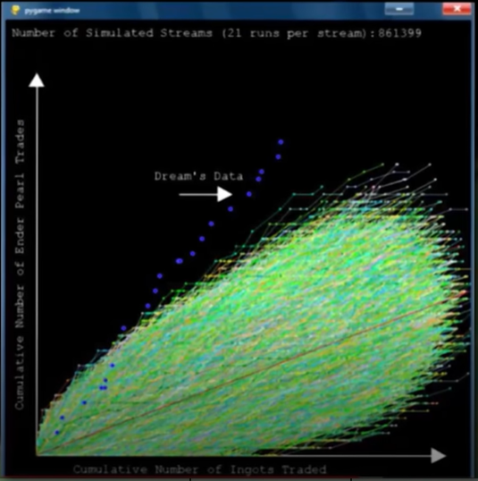

On considère que le premier jeu vidéo de l’histoire était « Tennis for two » sorti en 1958. Ce jeu, composé d’un oscilloscope pour tout écran, permet à deux personnes de se renvoyer un point de lumière. Nous sommes bien loin de nos standards actuels tel que « Overwatch » et son jeu rapide avec des explosions et sa quantité de personnages disponibles.
(Source utilisé)
(premier jeu vidéo, Tennis for two)
Ce qu’on peut considérer comme de l’intelligence artificielle dans le jeu vidéo va lentement venir dans les programmes. Un exemple bien connu est « Pac-man » sorti en 1980. L’IA des fantômes qui nous poursuivent était, à l’époque, considérée comme folle. L’algorithme n’était pas bien complexe. Les fantômes se déplacent en allant vers notre pac-man de droite à gauche et de haut en bas selon un degré de priorité imposé par les murs. (Source utilisé)
La première fois cependant où l’IA a vraiment impressionné était en 1999. IBM développe deep blue qui va réussir l’exploit de vaincre le champion d’échec en titre : Gary Kasparov. Cette victoire de l’ordinateur va montrer au monde le potentiel de l’IA et changer la manière de jouer aux échecs.
Cependant, l’IA ne se résume pas seulement aux personnages non-joueurs et est utilisé pour d’autres applications.
Améliorer les graphismes
Aujourd’hui, l’IA a plusieurs utilités dans le monde des jeux vidéos. Une assez peu connue est l’amélioration des graphismes. La société Epic Game a sorti en avril 2022 : Unreal Engine 5 (c’est un moteur de jeu vidéo, c’est-à-dire qu’il permet de créer un jeu vidéo) capable de fournir des graphismes de hautes qualités (regardez plutôt) (Source utilisé)
Mais pour le faire tourner. On peut penser qu’il va falloir une carte graphique à plus de 5000 euros. Non, car c’est là qu’intervient l’IA.
Elle va permettre de faire de « l’upscaling », rendre les jeux plus beaux qu’ils ne le sont. Les algorithmes d'intelligence artificielle permettent à une texture existante d'être utilisée comme base pour générer des versions plus complexes ou des variantes de cette texture qui donne une plus grande variété visuelle à l'apparence du jeu avec peu d'effort et sans perdre son style visuel d'origine. Le résultat est une meilleure version du jeu original. On peut s’en servir sur les anciens jeux comme sur « Zelda » ou « Mario ».
(Source utilisé)
(exemple d'application de l'ia sur Zelda : Ocarina of time (1998))
L’IA intervient également sur le dernier « Call of Duty » pour augmenter son nombre d’images par seconde sans avoir de latence par exemple. L'entreprise Nvidia a développé une technologie qu’elle déploie dans ses cartes graphiques, le DLSS (Deep Learning Super Sampling). Cette technologie repose sur un matériel spécial, les tensor cores, que l’on ne trouve que sur les cartes graphiques RTX. Plus précisément, les séries 2000 et 3000 (et bientôt 4000 !). Elle se base sur le deep learning pour générer des images additionnelles de hautes qualités.
Pour réussir cet exploit, le DLSS fait appel à des supers calculateurs pour entrainer continuellement son IA (c’est pour cela que nous considérons être dans du deep learning). Les mises à jour se font ensuite automatiquement sur notre ordinateur. (Source utilisé)
Le principal avantage de l’utilisation de cette nouvelle technologie est d’obtenir plus de FPS dans les jeux. Les performances supplémentaires que vous pourriez obtenir dépendent de la résolution native, du GPU, du jeu et de la qualité du DLSS. Habituellement, les utilisateurs ont la possibilité de choisir parmi différents modes tels que Qualité, Équilibré, et Performance. Cependant un des désavantages est qu’il n’y a pas encore tous les jeux disponibles avec cette technologie. (Source utilisé)
La génération procédurale
Certains jeux ont l’air d’avoir une carte si grande qu’elle semble infinie. L’exemple le plus connu est bien sur minecraft avec plus de 200 millions de téléchargements. Le joueur va pouvoir créer autant de carte qu’il veut et chaque carte va mesurer environ 3.6 milliards de kilomètres carrés (en convertissant les distances en jeu dans notre monde). Mais comment réussir à générer en boucle de tels univers ? C’est là que l’IA intervient avec la génération procédurale.
La génération d’arbre, de montagne, de monstres… Tout s’appuie sur des formules mathématiques, de nombres aléatoires et de formules définit par les développeurs. Cette génération permet de gagner un immense temps de ressources et de développement. De nombreux jeux ne s’en servent pas forcément pour leur carte mais pour affecter des caractéristiques (Diablo en 1996) ou pour créer des niveaux (Candy Crush 2022).
Le gros défi de ces mondes est qu’ils doivent faire vrais. La nature n’aime pas les lignes droites et pour créer une expérience plus immersive, on doit pouvoir croire en notre monde et avoir une certaine forme de chaos. Même minecraft un jeu plutôt carré applique ce concept. Pour générer les meilleurs nombres aléatoires, rien de tel que d’utiliser la suite de Fibonacci. En additionnant les 2 premiers termes et le résultat avec le terme précédent, on obtient une suite de nombre pouvant sembler aléatoire mais qui suit une règle mathématique. Il nous suffira alors de changer les 2 premiers termes pour avoir une nouvelle séquence.
(Source utilisé)
(exemple de paysage sur minecraft)
Pour éviter que notre fichier fasse cependant plusieurs giga-octets, notre monde va générer qu’une partie de la carte et au fur et à mesure que le joueur va progresser, du contenu va être de nouveau générer et garder en mémoire.
Plus que des cartes ou des objets, la génération procédurale permet également à une IA de créer un jeu vidéo complet. Le jeu « Candy Shop Slaughter », du scénario en passant par les graphismes, tout a été conçu par une IA. Le jeu étant sorti en milieu 2021, cette méthode en n’est encore qu’à ses débuts. Une grande part des joueurs trouvaient que le scénario était pauvre et pas assez immersif. Cependant les développeurs espèrent qu’à l’avenir, tout le monde pourra créer ses propres jeux vidéo en rentrant certains paramètres, voir même de pouvoir mettre à jour nos jeux déjà existants en rajoutant du contenu ou en modifiant certaines règles. (Source utilisé)
L’anti-cheat
Bien que certains jeux, comme le récent "age of empire 4", acceptent la triche en implémentant des cheat-code dans le mode solo, rien de plus frustrant que de jouer contre quelqu’un qui a un avantage sur vous. Les raisons de la triche sont diverses, être plus fort que son vrai niveau, automatiser des actions ou encore être le meilleur. Cela permet au joueur de pouvoir gagner en notoriété et en argent, en effet certains joueurs gagnent de grosses sommes et sont même dans le Guinness book des records grâce à leur performance. C’est pourquoi les joueurs et les développeurs mettent au point diverses techniques pour débusquer les tricheurs afin que les bons joueurs ne soient pas des imposteurs. Nous allons pouvoir séparer les jeux en deux catégories : les jeux solos ou en ligne.
Jeux solos
Comme je l’ai dit, les développeurs peuvent implémenter un système de triche pour les joueurs voulant se débloquer ou même moins se prendre la tête dans les jeux solos. En effet, ceux-ci jouent contre l’ordinateur (ou contre eux-mêmes). Le problème survient notamment avec les speedruns (le principe est de finir le jeu le plus vite possible). Comme de grosses sommes sont à la clé, les joueurs développent de multiples techniques pour contrer les tricheurs.
Sur les jeux anciens, une simple photo était suffisante comme preuve pour le record, même si aujourd’hui on pourrait facilement voir le trucage s’il a eu lieu, beaucoup de ces photos ont été perdues. Diverses techniques ont été alors mises en place pour trouver un compromis.
Sur le jeu Dragster sortie en 1980, le record du monde était encore plus haut que ce que les IA, réalisant pourtant des mouvements parfaits, faisaient. Pour prouver la triche, un ingénieur a créé une IA pour analyser les signaux électriques de la cartouche pour prouver que son score est impossible que ce soit physiquement, électriquement ou quantiquement.
(Source utilisé)
(analyse des signaux électriques)
Une technique des tricheurs est de coller ensemble des bouts de la partie pour faire croire qu’il a réussi (On appelle cela le « splicing »). L’avantage des speedruns récents c’est que la performance doit être filmée pour être validée. L’analyse minutieuse de la vidéo est alors faite pour valider ou non le record. Bien que parfois il est facile à un utilisateur lambda de vérifier, il est parfois nécessaire de se servir d’IA : pour analyser les frames d’un logo qui s’affiche dans certains cas, les bruits de fond électrique d’un audio…
Le tricheur peut aussi modifier le code même du jeu car bien souvent l’aléatoire est décisif dans les jeux. Si la modification est mal réalisée on s’en rend facilement compte. Un graphisme qui change, une animation qui ne se déclenche pas… Mais parfois la différence est plus subtile. Souvenez-vous de minecraft et de la génération procédurale. Normalement pour réaliser le record, il faut arriver à tuer par essai en moyenne : 12 monstres spécifiques pour obtenir 6 bâtons et échanger 272 fois avec d’autres monstres spécifiques pour obtenir des perles. Une IA a alors comparé l’ensemble des parties du recordman pour en faire une analyse statistique et a détecté une anomalie. La personne a alors perdu tous ses records. L’IA créée par les joueurs analyse également d’autres facteurs, le contenu des coffres ou l’apparitions des structures…
(Source utilisé)

(Courbe des probabilités)
Jeux en ligne
Le jeu en ligne suit d’autres règles. Comme le joueur joue avec ou contre d’autres joueurs, tous doivent être sur un pied d’égalité et suivre les règles fixées par le jeu. Les développeurs ne vont que très peu communiquer sur leur système de vérification, de protection et de bannissement pour éviter que les personnes mal intentionnées ne se servent des informations communiquées mais chaque structure agit comme elle l’entend.
Pour FIFA23, le système EA anti-cheat est obligatoire pour chaque joueur jouant en ligne, il empêchera les fichiers et logiciels externes d’être injectés dans le jeu. La licence espère ainsi ne plus voir des joueurs qui doivent simplement appuyer sur une touche pour marquer un but de n’importe où sur le terrain. (Source utilisé)
Riot Game, la société du jeu League of Legend, utilise une méthode plus approfondie. Ils ont créés une page d’accueil complexe pour que ceux voulant modifier le code du jeu prennent beaucoup de temps pour le décrypter. Ensuite quand on lance une partie, le client s’efface pour laisser place à la fenêtre du jeu mais ceux-ci communiquent pendant la partie. Une IA a été conçue pour vérifier quelles informations circulent et pour analyser les fichiers du jeu installé.
En plus de cela, une IA analyse les parties et vérifie si les joueurs font des actions d’humain. Elle analyse leurs déplacements, leurs réactions… sur une multitude de parties puis tire ses conclusions.
(Source utilisé)
(évolution de la triche sur League Of Legend)
On remarque que le nombre de tricheur diminue drastiquement au fil des années. Le responsable de l’équipe anti-cheat de Riot était fier de son IA qui était capable de détecter de mieux en mieux la triche si bien qu’il lui faut moins de 10 parties pour sanctionner le compte faisant usage de triche.
Un problème de jeu comme League of Legend ou Dofus est l’utilisation de bot. Des personnages contrôlés par un ordinateur. Il faut alors réussir à faire la différence entre eux et un joueur humain. C’est avec ce genre de problème qu’on voit la limite actuelle de l’IA. Il nous est souvent très simple de différencier les 2 cas en seulement 5min de visionnage de gameplay alors qu'une IA aura beaucoup plus de mal. Pour les combattre Riot a tout d’abord mis en place une page d’accueil complexe qui limite le nombre de bot amateur. Puis au fil du temps, leur IA et leur système de niveau arrive à les détecter. Chose amusante, au lieu de les bannir, Riot les fait jouer entre eux pour des parties plus longues afin que les utilisateurs de bot perdent un maximum de temps et de ressources.
Outils utilisés
-La chaine Youtube (ainsi que les autres réseaux sociaux associés) Trash